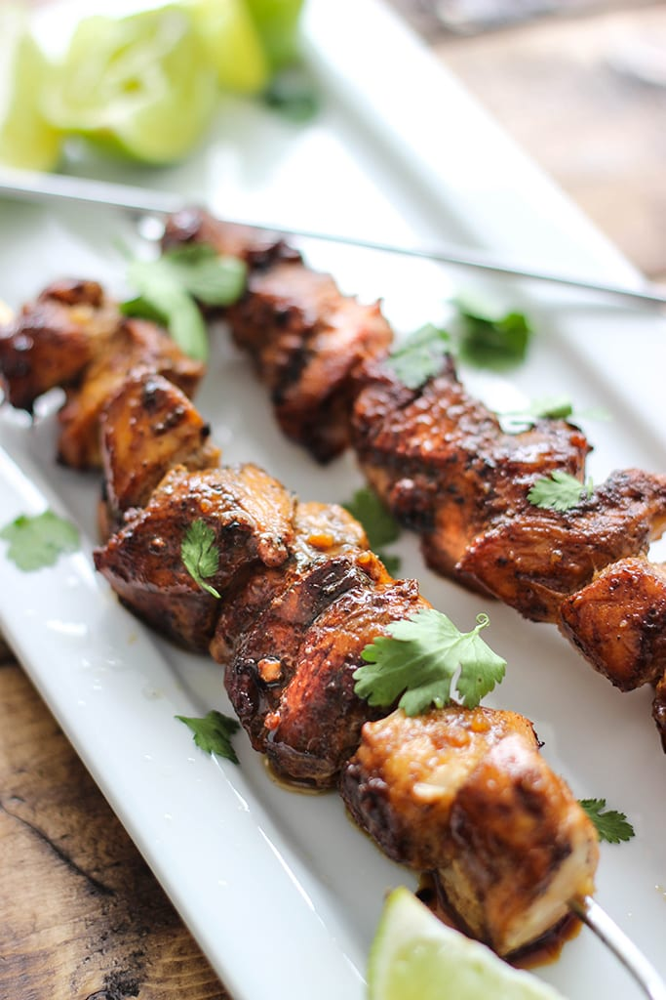

Teriyaki Skewers
These teriyaki skewers are delicious and easy to make! They're perfect for a casual meal or a party.
Ingredients:
- 1 pound boneless, skinless chicken breasts, cut into 1-inch cubes
- 1/2 cup teriyaki sauce
- 1/4 cup brown sugar
- 1 tablespoon soy sauce
- 1 tablespoon sesame oil
- 1 teaspoon garlic powder
- 1/2 teaspoon black pepper
- 12 wooden skewers, soaked in water for 30 minutes
Instructions:
- In a large bowl, combine the chicken, teriyaki sauce, brown sugar, soy sauce, sesame oil, garlic powder, and black pepper.
- Marinate the chicken for at least 30 minutes, or up to overnight.
- Preheat the grill to medium-high heat.
- Thread the chicken onto the skewers.
- Grill the skewers for 10-12 minutes, or until the chicken is cooked through and the glaze is sticky.
- Serve immediately.